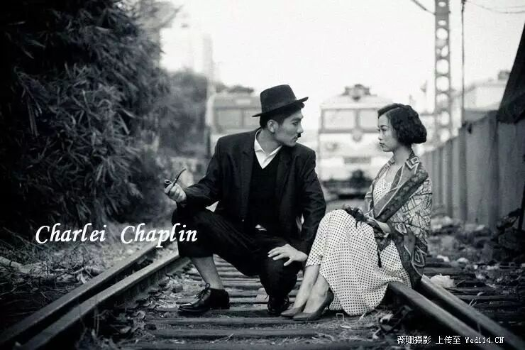
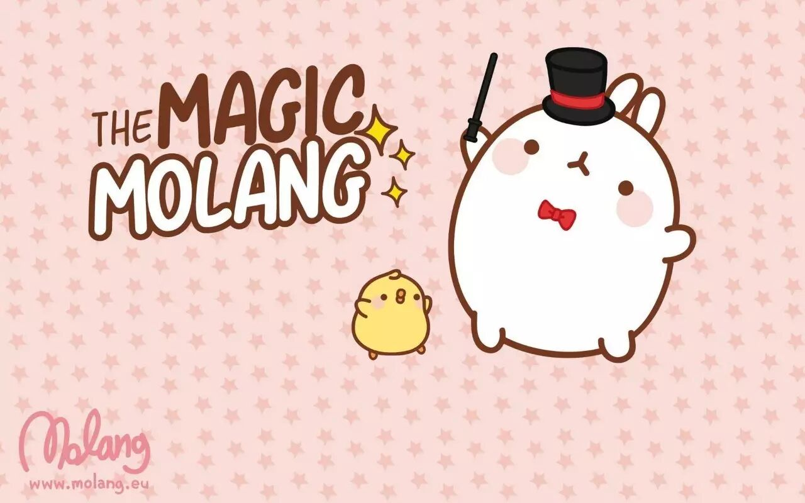
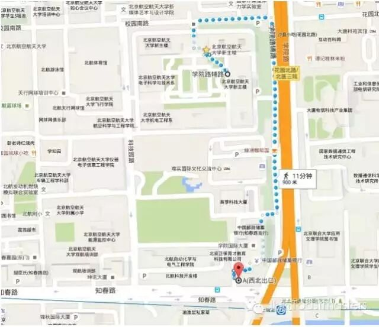

Time：19:30-21:30, Friday, May 19th
Venue: Room A218, New Main Building, Beihang University.
Table topic :Scope
Toastmaster: Rocky
Table Topics Master: Gastby
Scope, the same meaning as foresight and vision, is ability to judge the trend in the future accurately which many people can not foresee and seize opportunity others don't realize.
As society is always changing more and more better educated and competent, people are in need of scope. For those guys with great ambitions, they do require some smart strategy , and also scope and foresight.
“A man without distant care must have sorrow”， this is a sentence from sayings of Confucius , which proves significance of scope. So let's talk about your experience with scope and your idea about it today!
Prepared speech
Speaker 1: Amy CC4－－
Comic life

None of us can precisely predict what will happen on us tomorrow , therefore sometimes we may be caught unprepared. However, a girl summarizes her life as a comic. In her opinions, comic existing interacts her so deeply, why does she say like that, we need to heed her talk.
Speaker 2: Qiqi CC6－－
The chubby girl

For every single girl, being thin maybe they dream of all the time, and Qiqi is no exception. For sake of health and beauty , they will spare their all effort to conquer unsatisfating weight. Alright, let's hear Qiqi's speaking a story of a girl about weight-reducing.
Toastmasters International (TI) is a non-profit educational organization that operates clubs worldwide for the purpose of helping members improve their communication, public speaking, and leadership skills.You can find us by the following map of Beihang University.

https://mp.weixin.qq.com/s/9te-HCG0Dl1PPB1tOjwroA
本页为抢救式本地归档，图文已永久保存。